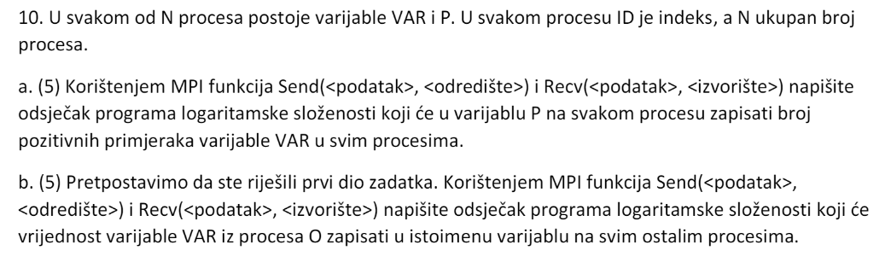

Klokan ovo je bio profesorov komentar. tako da je valjda odustao od takvih zadataka (što god spada pod obican ispit)
zisku i par dana nakon toga uvalio takav u 19/20 ZI
Klokan je li u takvim slučajevima prizna i linearno rijesenje? s paralelnom obradom se moze skratit za neku kostantu u svim slučajevima osim ako se radi o jednoj rečenici
zisku mislim da je samo veca od 1
a_ko_si_ti ne znam, moguce da da
a_ko_si_ti Rekao je još i prije MI da složenost ne smije biti gora od složenosti slijednog algoritma, a da je najbitnije da opišete ideju algoritma i što više napišete o njemu
Zna li netko ovaj rješit? Nisam siguran je li u brojniku za učinkovitost stavljamo P = 1 ili 2, s obzirom da za P = 1 ne bi trebao algoritam raditi?
Bila Pitura Ovaj primjer je profesor riješio na zadnjem predavanju
Process i mene zanima, ja sam pokušala derivirati funkciju potrošnje ali dobijem broj procesora negativan broj haha tako da nešto ne štima
toblerone U Tp treba biti 250/P
9.a)Ukupan broj poruka koji se razmjene(pošalju) u provedbi komunikacijske strukture hiperkocke za 2d procesa iznosi______.
Što bi tu odgovor bio?
Cvija Mislim da je d poruka. Jer se razmjeni logaritam od količine procesa, pa to izbaci d.
Cvija Treba biti 2D * log(2D) poruka (hiperkocka -> n * log(n) poruka za n procesa). Svaki proces (njih n) šalje i prima log(n) poruka.
Zna li netko  iz prošlogodišnjeg ZI?
toblerone Pod a) bi trebala biti hiperkocka s obzirom da svi moraju znati rezultat ako se ne varam. Svaki proces stavi P = 1 ako je VAR pozitivan i zatim se pošalje vrijednost i dodaje se primljena vrijednost.
toblerone Mislim da bi ovo za b) bilo
ReyKenobi e da sam bar otvorio studose prije ispita haha
sta je s ovim, dolazi svake god
andiamo mislim da je prvi T
?